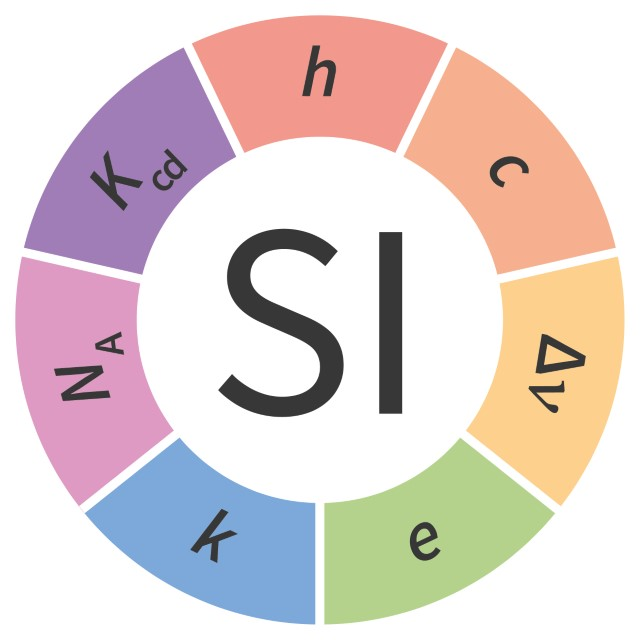

SI Units

Welcome to SI Units, a library of SI quantities and unit types based on BIPM standards.
Using Indriya the Units of Measurement Reference Implementation.
The project currently contains the following modules:
Authors and Contributors
This page was brought to you by Werner Keil (@keilw). Other major contributors are Thodoris Bais (@thodorisbais), Chris Senior (@duckAsteroid) and Nathan Scott (@natoscott).